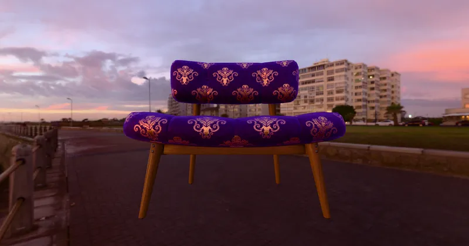

GLTF GLTF Extensions KHR_materials_sheen
Chair Damask Purplegold - RedGPU WebGPU Example
Expresses the fabric feel of a damask pattern chair.
다마스크 패턴 의자의 직물 느낌을 표현합니다.

GLTF GLTF Extensions KHR_materials_sheen
Expresses the fabric feel of a damask pattern chair.
다마스크 패턴 의자의 직물 느낌을 표현합니다.
